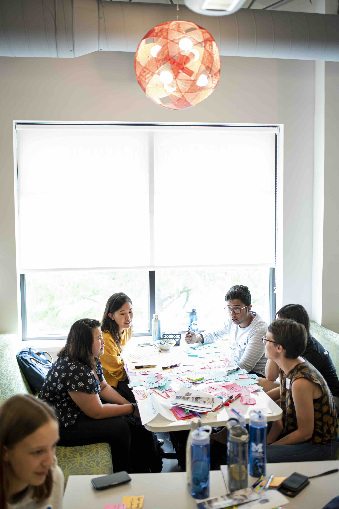
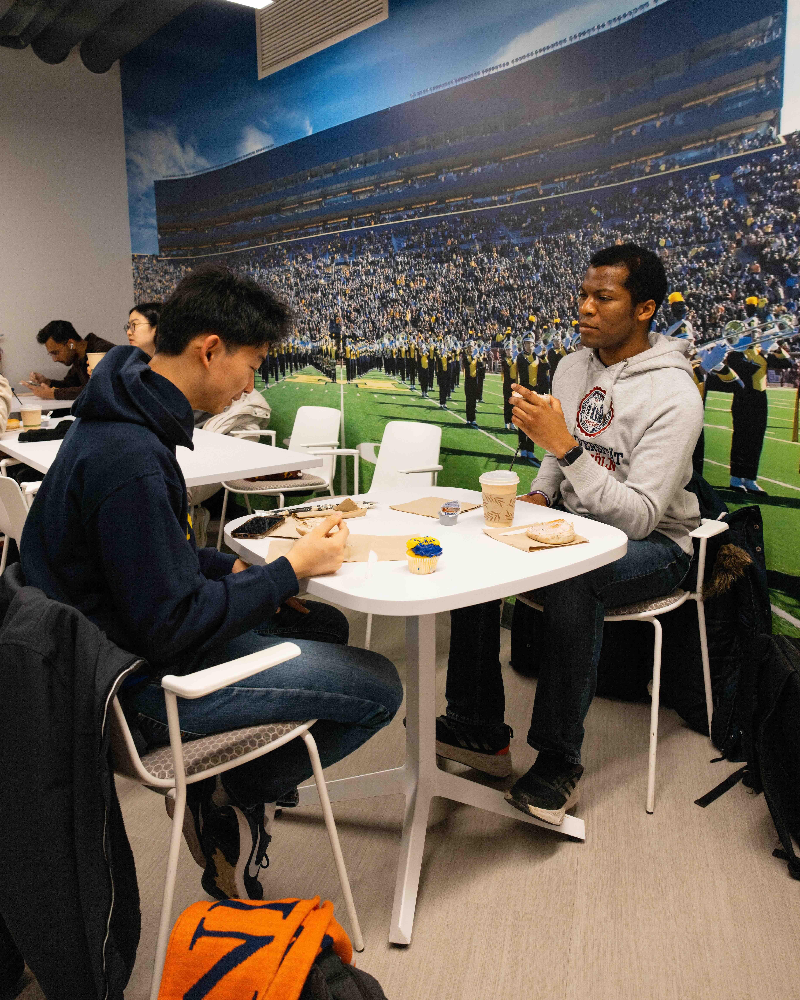
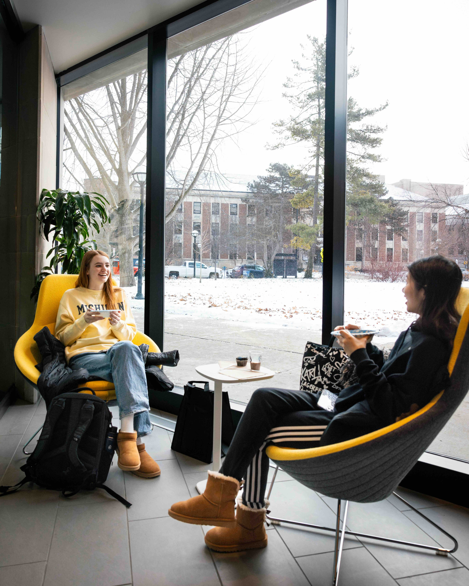
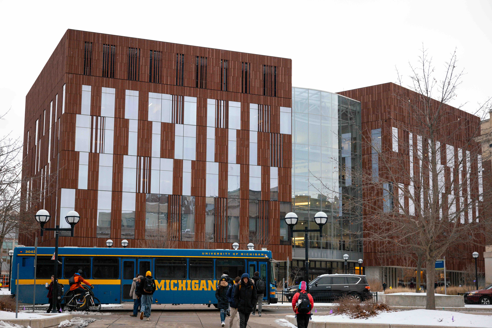

Resources By Category
Critical Incident Support & Conflict Management
Support for students who are experiencing or have been impacted by a conflict or critical incident.

Finance
Financial resources to help with immediate and long-term needs, such as emergencies, college funding and employment.

Food
Services to help students maintain healthy habits, find access to food, and seek assistance when struggling to buy food.e

Health Care
Support for students seeking medical, dental or mental health treatment, including resources for securing health insurance and finding care providers.

Housing & Transportation
Campus and community resources for securing housing, accessing transportation, and seeking assistance for a variety of housing needs.